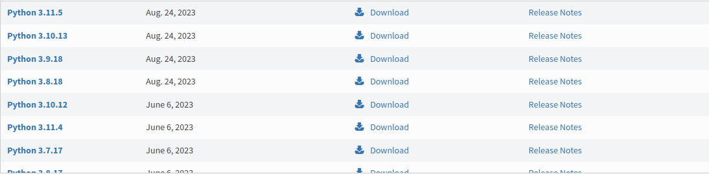

Python é uma linguagem de programação conhecida por sua facilidade de aprendizado e versatilidade. Ela pode ser usada para criar efeitos simples em front-end, assim como no JavaScript, e também é adequada para o desenvolvimento de sistemas complexos, similar ao uso do Node.js em JavaScript. Além disso, Python oferece uma ampla gama de bibliotecas e frameworks para diversas aplicações, tornando-a uma escolha popular tanto para iniciantes quanto para desenvolvedores experientes.
<Baixando Python>

Para instalar o Python, você pode visitar o site oficial do Python e seguir as instruções de instalação.
<Operadores>
Python suporta vários tipos de operadores, incluindo:
Operadores aritméticos (+, -, *, /)
Operadores de comparação (==, !=, <, >, <=, >=)
Operadores lógicos (and, or, not)
Operador de atribuição (=)
Operadores de pertencimento (in, not in)
Operadores de identidade (is, is not)
Esses operadores são fundamentais para realizar cálculos, comparações e operações lógicas em Python.
<Estruturas de Controle>
Python oferece diversas estruturas de controle para controlar o fluxo de um programa. Algumas das principais incluem:
Condicionais (if, else, elif)
Loops (for, while)
Estruturas de decisão (switch-case não existe em Python)
Essas estruturas permitem que você tome decisões e controle a repetição de tarefas em seu código Python.
<Funções em Python>
Funções são blocos de código reutilizáveis que realizam tarefas específicas. Em Python, você pode definir funções usando a palavra-chave def. Exemplo de uma função simples:
def saudacao(nome):
return f'Olá, {nome}!'
Você pode chamar essa função e passar um nome como argumento para obter uma saudação personalizada.
<Listas em Python>
Em Python, as listas são estruturas de dados que permitem armazenar vários itens. Por exemplo:
minha_lista = [1, 2, 3, 4, 5]
Você pode acessar os elementos da lista, adicionar ou remover itens e realizar várias operações com elas.
<Dicionários em Python>
Os dicionários em Python são estruturas de dados que permitem associar chaves a valores. Exemplo: